Power rangers
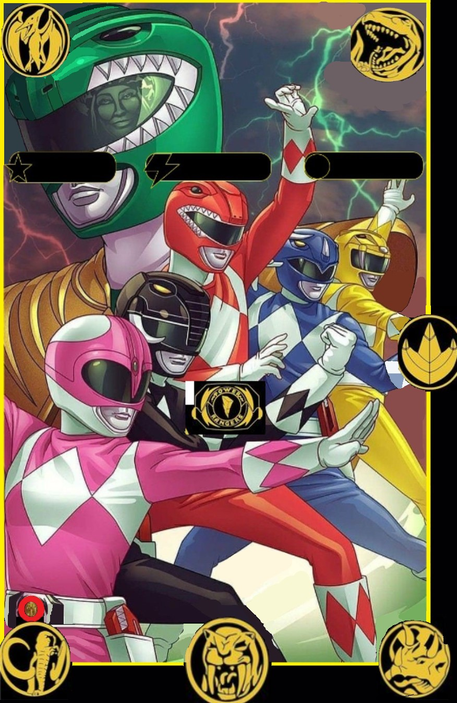
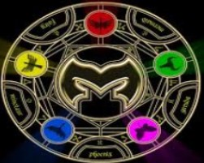
Power rangers 2017

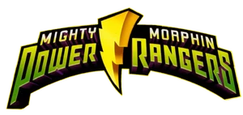
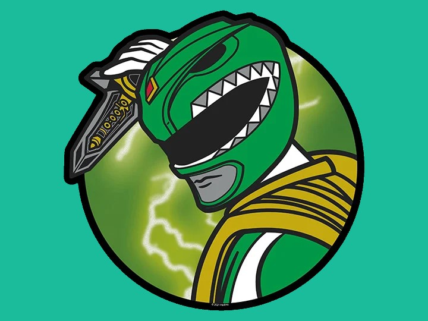
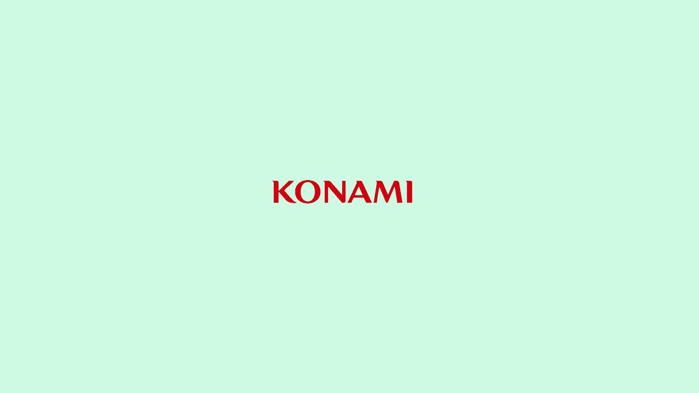
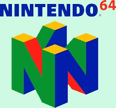
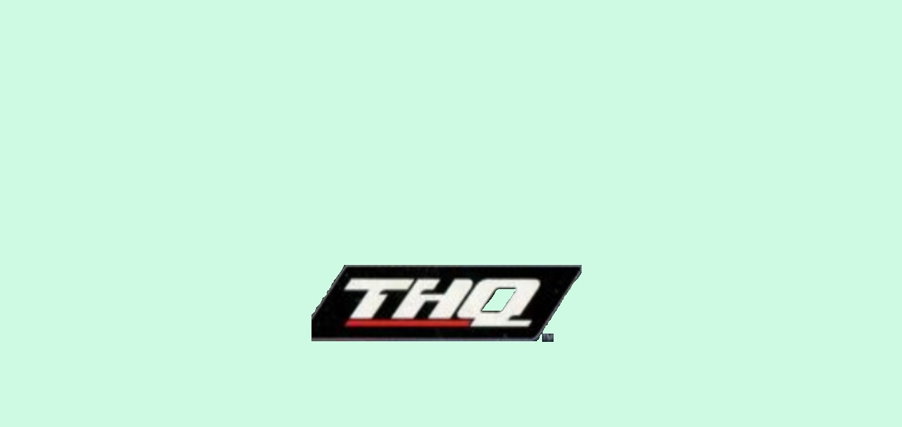
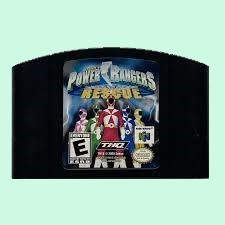
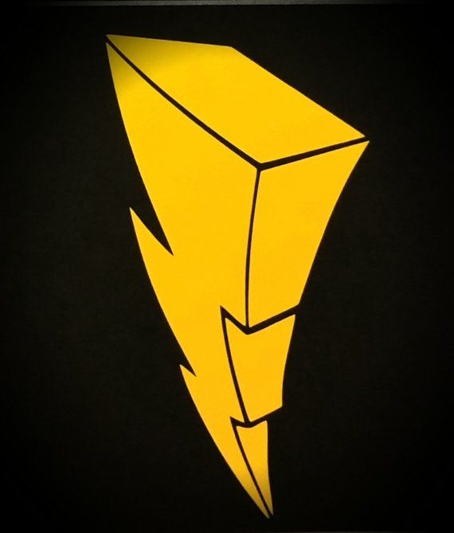
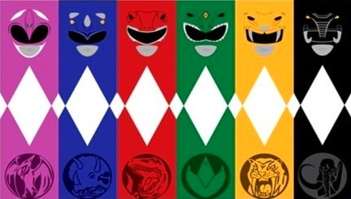

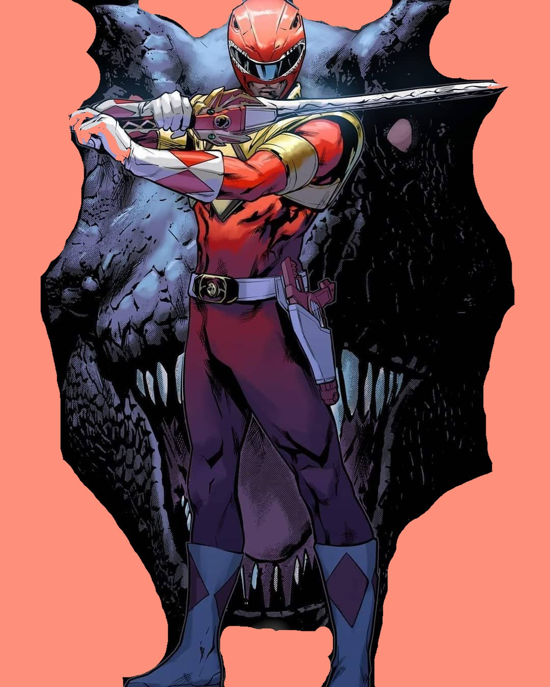
Power rangers light speed rescue 64™ 1999




Power rangers light speed rescue 64™ 1999
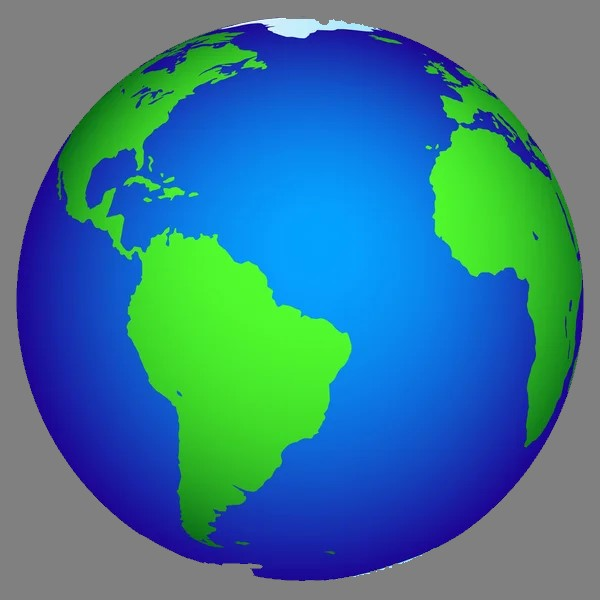
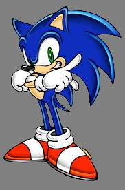
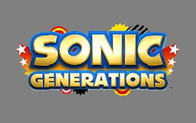
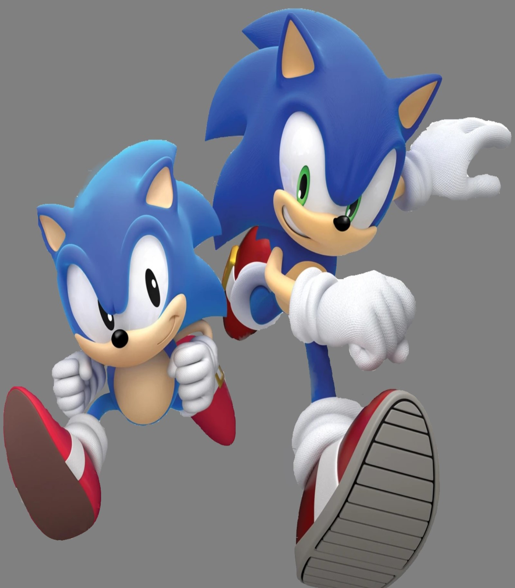
The following is a reproduction of the original text as it appeared. Character Outline: Sonic the Hedgehog Approximate age: 18 (but it's kind of hard to tell). Legendary blue hedgehog with an attitude. Is the fastest in the land. Strong sense of justice but irreverent to authority. Impatient (does not like to stand around). Not detail-oriented (short attention span). Likes anything fast. Loyal to his friends but enjoys his independence. Street smart, but warm at heart. Loves beauty, nature, cool music and adventure! Not a hero, but has lots of self confidence and courage. But, above all else, he is FAST! The Background Story: Sonic's Origin Mary Garnet was a popular writer of children's books in the U.S. during the 1940's. Her Husband was a test pilot for the U.S. Air Force. His secret project was code named "Blue Gale" who's goal was to produce the first plane that would break the sound barrier. Mary affectionately nick-named her husband "Hedgehog" because of the way his hair always struck straight up when he took off his flight helmet. The nickname stuck and it inspired Mary to decorate his leather flight jacket with a blue cartoon mascot. Since her husband was so busy flying for the Air Force, Mary had to fill in for him raising their only daughter Sherry. Mary would spend the afternoons making up stories to tell Sherry and her friends. Oddly enough, it would always seem that a hedgehog would be the hero of the story. "Sonic" the hedgehog had many fantastic adventures usually protecting innocent people and little animals from evil men. Sherry used to love hearing these stories and Mary used to love telling them to lots of children for many years.* In 1947, Chuck Yeager (also a test pilot for the U.S. Air Force) became the first man to break the sound barrier to become the "fastest man alive". But a little known incident took place earlier on the same day that has been lost in the record books, eclipsed by the historic event. Another pilot called Hedgehog had set out to break the same record but with tragically different results. His ill-fated jet plane was rocketing towards the speed record when it suddenly started to vibrate violently and then exploded in a tremendous fireball! Nobody seems to remember the real name of the brave pilot, but old-timers around the airport still remember the emblem of Sonic the blue hedgehog....... *These stories and their characters were used as the basis for the Sonic video games from Sega. SEE: The Game Story. About forty years later, a freelance camera woman named Meg came to town on an assignment to cover an upcoming Air Show. As she stopped for lunch, she decided to browse through an interesting looking Antique shop near the airport. Inside she discovered a very dusty old leather flight jacket with the emblem of a strange character and the letters S-O-N-I-C on the back. She tried to decide if this character was a lion, a cat, or some other strange animal. But something drew her to it and she instantly liked it a lot. She tried it on and the shopkeeper couldn't help but notice: "Say Lady..... looks like that Jacket is just your size! Do you like it?" "Why yes! It's great! It's a little dirty but.......do you know what this word SONIC means? It sounds strangely familiar. Like I've heard it before....." "Well, I guess it's probably the name of that funny-lookin critter on the back." "Sonic.. yes Sonic!... Oh I remember, he is SONIC THE HEDGEHOG! I used to hear the stories from an old neighbor lady when I was a little girl. He's a little hedgehog that can run faster than sound!" Meg laughed out loud as the rush of childhood memories poured back to her. She dusted off the old jacket, eagerly paid for it, and she giggled to herself as she wore it out of the store. This immediately became a favorite possession and she wore it everywhere. She could not explain the strange sensation she felt when she w as wearing this jacket, but something made her feel quite comfortable and safe with it on. Upon arriving at the Air Show, Meg started taking pictures of all the vintage aircraft. At one point during the show, a group of old WW2 planes were doing a low-level formation fly-by when suddenly one of the planes veered off and fell to the ground! In the panic of the following explosion, Meg found herself surrounded by fire. She tried to escape but became disoriented as all she could see was a wall of flame. Suddenly a hand reached out and grabbed her just as she was passing out from the intense heat. As she slipped into unconsciousness, all she could see was a strange blue form and she felt the sensation of tremendous acceleration. Meg woke up staring at the ceiling of a hospital room. She was a little singed and badly shaken, but not really hurt. "Have I been dreaming?" she asked herself. Her nurse told her that she had been found unconscious lying on a grassy hill miles from the airport. No one could explain how she got there, but her jacket had been burned and Meg noticed that the emblem had disappeared! Could it be? She had this strange idea that somehow Sonic must have saved her, but she stopped short of saying anything because she didn't want to sound crazy. Even though it seemed impossible, all she could say was "I don't know.....". Later, as she developed the pictures in the camera of the last moments of the Air Show, Meg's heart stopped as the last exposure came into view. It showed the blurred image of a large pair of red shoes with a white stripe.....SONIC!!! Was it really him? What other explanation? She was confused....but it seemed so real! A moment later, she gasped with excitement at the thought of seeing him again. The Game Story: (adapted from the Sonic Stories of Mary Garnet) Sonic was born on a small island called Christmas Island. But his love for adventure called him away and he has visited so many different places on Earth that he doesn't really have a place he considers to be home. The Sonic stories center around his favorite group of islands including South Island (Sonic 1), Westside Island (Sonic 2), and Angel Island (Sonic 3). The first Sonic Story is located on South Island which is quite beautiful. This island is known for the curious fact that it floats around in the ocean. That is why it can not be found on any map. Sonic is fond of sitting on its beach in his beach chair, wearing sunglasses, and listening to cool rock music. Sonic loves to sing in his own rock band, and enjoys being with his friends, but he is just as happy to be alone. Sonic would be very happy enjoying his own pastimes were it not for the constant intrusions of his arch rival Dr. Robotnik (also sometimes known as Eggman because of his round shape). The evil doctor seems to have an endless supply of fiendish plots to take over the world, but Sonic seems to always find a way to frustrate his plans and keep him at bay. This has given Sonic somewhat of a celebrity status with the local inhabitants and he is loved by all as much as Robotnik is hated by all. Westside Island is a very ancient island with plenty of treasures and ancient ruins. It is also said to contain a small supply of a very powerful natural crystals called "Chaos Emeralds". These multi-colored emeralds have tremendous energy and could be used to create the most powerful nuclear bombs and laser weapons if they fell into the wrong hands. Legend says that they exist here, but nobody can remember actually seeing them. The reason for this is that the Chaos Emeralds exist in a different dimension and no one has yet been able to find a way to actually possess them. One day, Dr. Robotnik heard the stories of the Chaos Emeralds and he vowed to do whatever it took to acquire them for his own evil purposes. He, and his henchmen, built a huge fortress where he made robots of many types and sent them off to find the Chaos Emeralds. Sonic stood up in defiance of Robotnik's troops and kicked them all back into the fortress telling them never to come out again. But the evil doctor had other plans. as he sulked away, he vowed that he would find the Chaos Emeralds, and he would get his revenge on Sonic the Hedgehog. A short time later, Sonic made an amazing discovery. His friends had all disappeared! Robotnik had been capturing all of the defenseless animals in the countryside and had changed them into robots! Dr. Robotnik was converting Sonic's friends into slaves and now only Sonic to save them! Can Sonic do it? Will Robotnik succeed in his quest for the emeralds while exacting his revenge on Sonic? Can Sonic subdue the hoards of robot animals without hurting his friends inside? Will Robotnik take over the whole world? So begins the video game saga of Sonic the Hedgehog...... Primary cast of Game Characters Sonic Sonic is the star. He is a cool blue dude with an attitude. he is not a "do-gooding" hero. He is loyal to his friends and has a good sense of right and wrong, but he is a very independent guy who is mostly interested in doing his own thing. He is not book smart, but he is very street smart. He loves beauty, nature, and adventure, but his primary passion is for speed and indeed he can run faster than anyone on the planet. Two things he does not do are; swim (he sinks like a stone), or ride around in cars, motorcycles, etc. (why should he when he can run faster than them all!). He fancies himself as a bit of a ladies man, but he does not like to be chased by girls. He is generally impatient and likes to get things done quickly. Sometimes this can work against him because he is not very detail oriented. But for the most part, Sonic is as quick witted as he is fast footed and this gives him an extraordinary combination of talents that keep him the idol of kids around the globe. Miles (Tails) Prower Miles Prower (from Miles-per-hour), nicknamed "Tails" is a two-tailed flying fox with the amazing ability to use his twin tails like the blades of a helicopter allowing him to fly (and mostly keep up with Sonic). He made his first appearance in Sonic 2, and he is truly the little brother that Sonic never had. Miles worships Sonic and wants to be just as fast and cool as his hero. He is about 10 years old, weighs 15 pounds, and is about 2.9 feet tall. Miles is a very smart little fox and is also very good with mechanics. He has been known to help Sonic by giving him a helicopter lift when needed. His inquisitive nature and tag-along style get him into trouble occasionally, but Sonic always seems to be able to help out his little buddy when the chips are down. Dr. Robotnik The evil doctor (also known as Eggman) has been a bad egg from the very beginning. Nobody knows quite where he came from, but he is definitely behind any problem that comes up. Dr. Robotnik loves machines. He loves them so much that his idea of a perfect world would be to have it full of nothing but machines. He thinks they are beautiful and he likes that he can control them. A genuine genius megalomaniac, he spends all of his time trying to replace the natural world with his beautiful machines He is not very concerned about saving the planet (being a notorious polluter), and he particularly likes the idea of exploiting the oceans for their riches (This really gets to Sonic, because Sonic loves the oceans and can't stand the idea of Robotnik messing with them). In order to have ultimate control in his quest, Robotnik must find and control all of the Chaos Emeralds, and most importantly.....Sonic. Fortunately for everyone, Sonic is an incredibly fast moving target and is usually one step ahead of him. Knuckles Long ago, an ancient civilization called the Echidnas lived on Angel Island and had mastered the secrets of the Chaos Emeralds. so powerful were these emeralds that the entire island floats high in the sky. The island's existence has long been a secret because not many people have ever seen it as it is always obscured by clouds. But the Echidna Tribe mysteriously disappeared leaving Knuckles as their lone descendant and guardian of these secrets. Knuckles is about 15 years old, wears his hair in "dreadlocks" and has a generally cool aura about him. He is quite athletic and can run almost as fast as Sonic, climb vertical rock walls, and float down (like flying) from high places. He can also use the spikes on his knuckles to help him dig which is one of his favorite activities. Knuckles has a strong sense of honor and has a good heart (he is the equivalent to Doronpa in the Oba-Q story). He is very clever and smart, but had lived his life in solitude and was not accustomed to dealing with characters from the outer world, much less such a cunning one as Dr. Robotnik. This is why he was easily deceived by Robotnik into thinking that Sonic was a bad guy trying to steal the Chaos Emeralds. This deception allowed Robotnik to pit Knuckles against Sonic as a powerful adversary. Knuckles snatched up the Chaos Emeralds from Sonic and then used his vast knowledge of the Island and his ability to dig to expertly escape from Sonic and Tails and to set up hidden traps and obstacles to slow their pursuit. Fortunately, this deception could not last because both Sonic and Knuckles ultimately discovered they were fighting on the same side of the same cause. They finally vowed to work together to protect Angel Island and ultimately defeat Robotnik.
Super Mario 64™ 1996
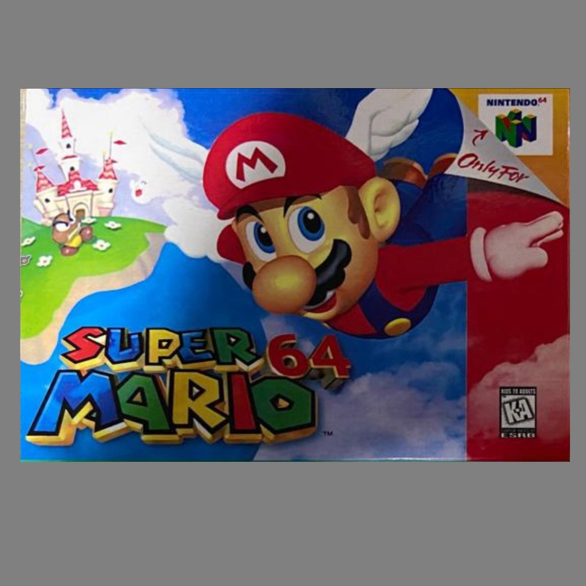
The Legend of Zelda™ : Ocarina of Time™ 1998
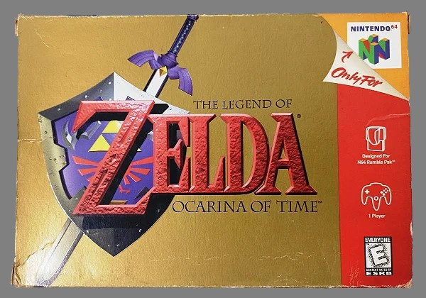
When the threat of Earth being taken over by Rita Repulsa arose after she was freed from her dumpster prison on the Moon, a wise old sage named Zordon, who had established a Command Center in Angel Grove, recruited five teenagers to assume the power of the Morphing Grid to defend the planet as Power Rangers - Jason, Zack, Kimberly, Billy, and Trini. When the battle escalated, they would call on their individual assault vehicles named Zords and destroy the monsters who threatened peace in Angel Grove, all while trying to live normal lives as high school students. The Rangers have gone through many roster, Zord, and power changes. Rita gave the Dragon Coin to a new student at Angel Grove High - Tommy, who fought against the Rangers as the evil Green Ranger, and later joined the team once the spell over him was broken. Tommy eventually lost his powers as the Green Ranger and gained new powers as the White Ranger. To defeat Lord Zedd, who arrived to take over Rita's task, the Rangers needed to upgrade their Dinozords into Thunderzords, and later bring back Tommy as the White Ranger. Shortly after, Jason, Zack and Trini left for Switzerland to attend a peace conference, and left their powers to three allies of the Rangers - Rocky, Adam and Aisha, who became the new Red, Yellow, and Black Rangers. When the team lost their powers after an attack by Rita's brother Rito, the Rangers took a trip to the Temple of Power, where Ninjor gave them new powers and Ninja Zords, which were later joined by the Shogun Zords. Kimberly's departure to train for the Pan Global Games paved the way for Katherine, who took her place as the Pink Ranger. The Rangers' Power Coins were stolen by Goldar, and destroyed by Rita and Zedd, putting an end to the Power Rangers as we knew them, and setting forth the events that would transform them into Zeo Rangers.
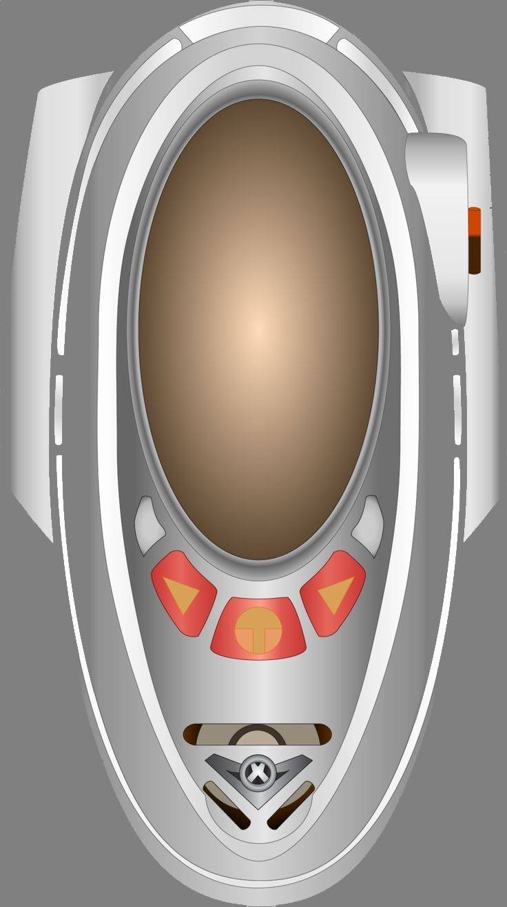
Project 64 Downloads Project 64 Downloads Roms power rangers light speed rescue Link to installer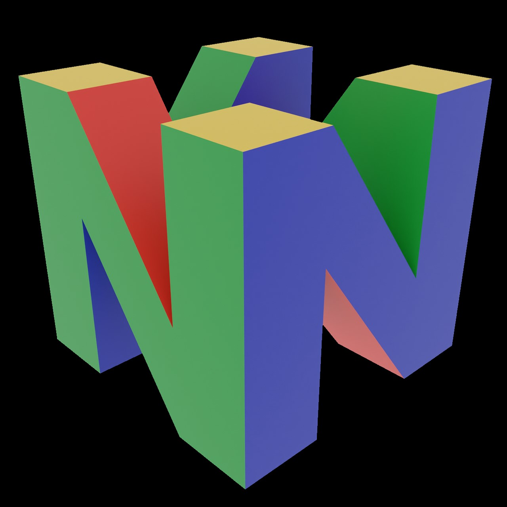
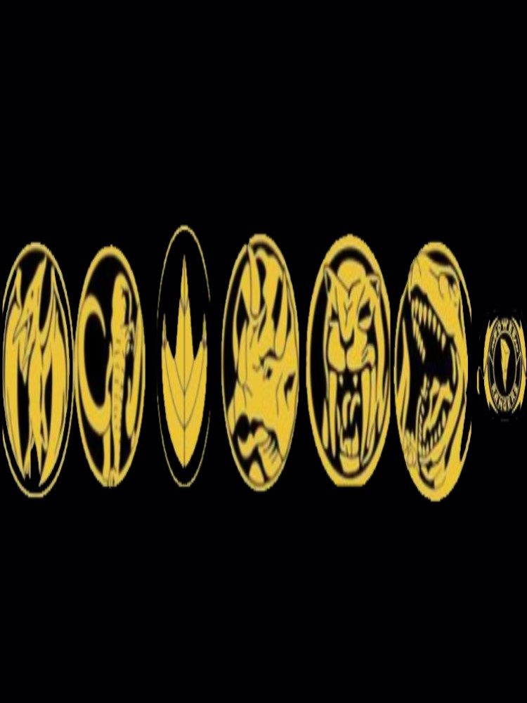
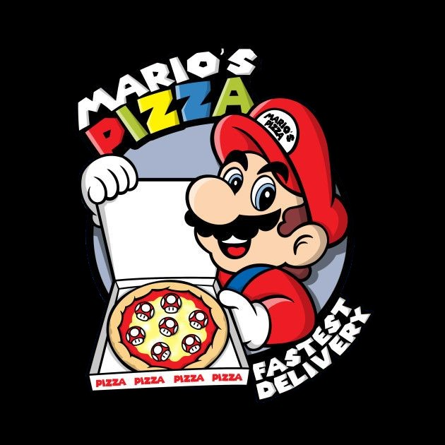